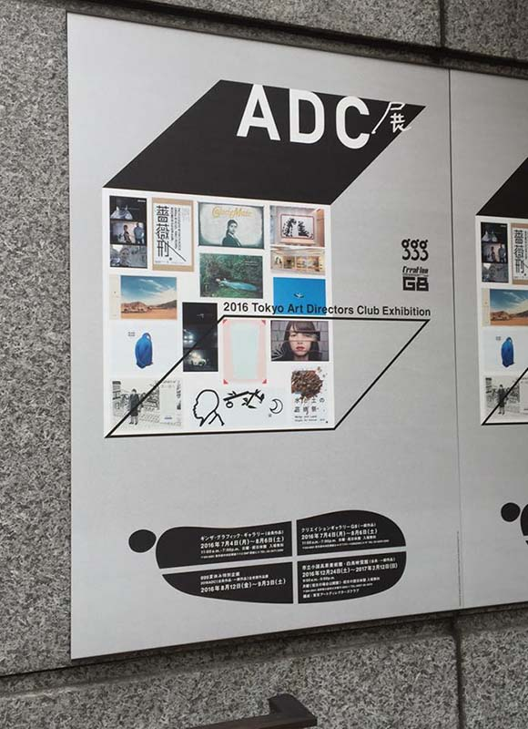
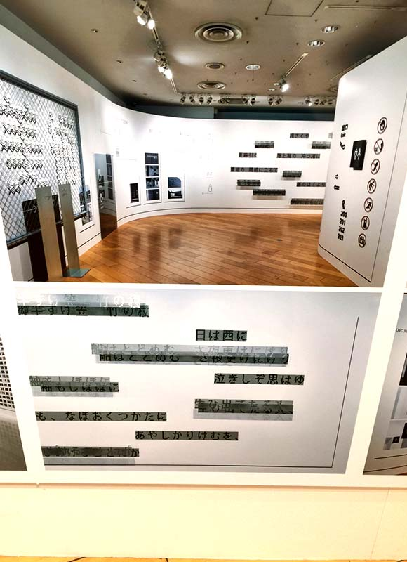
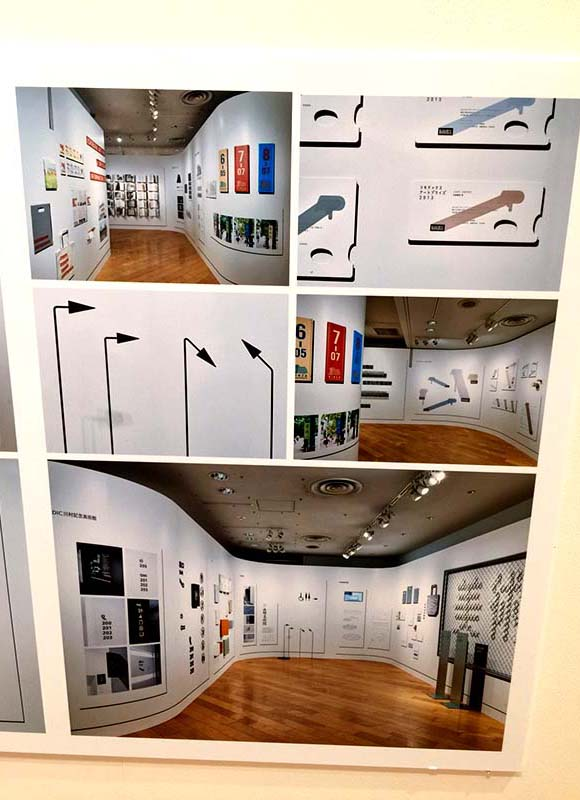

浅草名代らーめん
与ろゐ屋
甘味処 浅草いづ美
ギンザ・グラフィッ
ク・ギャラリー
淺草、銀座
神東京大神宮
柴又寅さん記念館
葛飾納涼花火大會
東京大人味發見
Day4-2015.07.26
< 淺 草、銀 座、葛 飾 區>
只剩今天還有空的時間很想去美術館星期二休館，還好這段時間有很多展覽可以看，所以選了ADC設計展。
展覽：ギンザ・グラフィック・ギャラリー(ADC展)
營業時間：2016年7月4日-8月6日 11:00-19:00
住址：104-0061中央區銀座7-7-2 DNP銀座ビル
網址：
http://www.dnp.co.jp/CGI/gallery/schedule/detail.cgi?seq=00000679
  
back